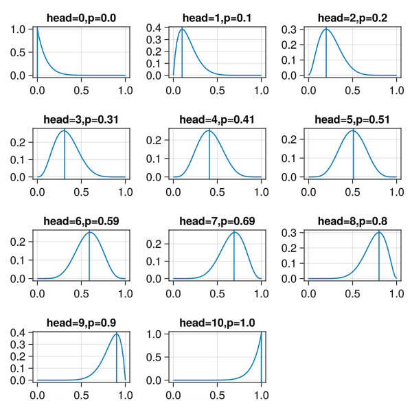

Code
using Distributions,GLMakie,Random,Pipe
Random.seed!(123)TaskLocalRNG()likelihook解释 参见:understanding-bayes-a-look-at-the-likelihood
似然率要解决的问题 对于投掷 10 次硬币, 获取 7 次正面的结果 pdf(Binomial(10,0.5),data=7)
pdf(Binomial(10,0.7),data=7)
pdf(Binomial(10,0.1),data=7)
返回值都不为 0,意思是p(head)=[0.1,0.5,0.7]的硬币都有机会获得这个观测结果 在这种硬币P(head)参数未知的情况下, 我们挑选出最有可能的一个参数值,这就是最大似然率估计
using Distributions,GLMakie,Random,Pipe
Random.seed!(123)TaskLocalRNG()@doc(Binomial)Binomial(n,p)A Binomial distribution characterizes the number of successes in a sequence of independent trials. It has two parameters: n, the number of trials, and p, the probability of success in an individual trial, with the distribution:
\[ P(X = k) = {n \choose k}p^k(1-p)^{n-k}, \quad \text{ for } k = 0,1,2, \ldots, n. \]
Binomial() # Binomial distribution with n = 1 and p = 0.5
Binomial(n) # Binomial distribution for n trials with success rate p = 0.5
Binomial(n, p) # Binomial distribution for n trials with success rate p
params(d) # Get the parameters, i.e. (n, p)
ntrials(d) # Get the number of trials, i.e. n
succprob(d) # Get the success rate, i.e. p
failprob(d) # Get the failure rate, i.e. 1 - pExternal links:
定义input_data 函数接受data观测值,返回一个新的函数, 参数是概率值, 返回值为概率密度
@kwdef struct CoinToss
total::Int=10
success::Int=7
end
function input_data(params::CoinToss)
total,success=params.total,params.success
return (p::Real)-> @pipe Binomial(total,p)|>pdf(_,success)
endinput_data (generic function with 1 method)probrange=range(0.0,1.0,50)
success_arr=0:10 #不同正面次数
fig=Figure(resolution=(600,600))
for i in success_arr
params=CoinToss(success=i)
local row= div(i,3)
local col=rem(i,3)
local ax=Axis(fig[row+1,col])
local likelihood=input_data(params)
max_likelihood=likelihood.(probrange)|>maximum
x=undef
for i in probrange
if likelihood(i)==max_likelihood
x=round(i,digits=2)
end
end
lines!(ax,probrange,likelihood.(probrange),label="head=$(i)")
vlines!(ax,[x],label="p=$(x)")
ax.title="head=$(i),p=$(x)"
end
fig